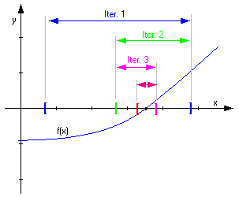

Bienvenido!
Este sistema fue diseñado para graficar funciones, y hacer uso del metodo de biseccion. Puede encontrarse errores poco convencionales, pero este recuadro de ayuda le puede servir.
El programa funciona perfecto en el navegador mozila firefox, pero tiene algunos problemas en navegadores como internet explorer, se recomienda usar firefox.
La grafica podria no mostrarse al principio, aun despues de insertar la funcion. Recargue la pagina, si eso no funciona, mas abajo se especifica como insertar funciones.
Los elementos se encuentran de esta manera
- Cuadro de informacion: brinda informacion inicial, especifica errores y advertencias.
- Grafica de la funcion: cuadro de 16x20 digitos, muestra la funcion
- Campos para ingresar: Aqui puede ingresar la funcion y los datos requeridos por el metodo de biseccion
- Dialogo de resultados: Aqui se mostraran los resultados. Aqui se encontraran tambien las iteraciones realizadas por el programa para llegar a tales resultados
Insertando funciones
La grafica y la obtencion de datos puede diferir dependiendo de como se escriba la funcion. La funcion solo sera reconocida si se escribe en terminos de "x" (minuscula). Se recomienda escribir (x)^n para exponentes, como si de una calculadora convencional se tratase. Si no se usa el parentesis asì, se obtendran resultados negativos sin importar el exponente. Al mismo tiempo puede escribir raices de esta manera: (x)^(1/2) para raiz cuadrada, por ejemplo. Al involucrar un producto debemos agregar el signo de multiplicacion "*" asi: 3*x. Al mismo tiempo, si se desea involucrar a varios elementos en una sola operacion, hacer uso eficiente de los parentesis asi: (x + 3*x)/20.
Las funciones trigonometricas son reconocidas en inglès, asi: cos(x), sin(x), etc. Por favor no olvidar la importancia de el uso de parentesis. En cuanto a sumas y restas, simplemente agregue el signo.
Usando el Metodo de Biseccion
El metodo de biseccion consiste en "hacer sandwiches" hasta llegar al punto donde la funcion se hace cero

Por eso es importante pensar bien que intervalo usar para "hacer sandwiches".
A partir de la grafica, puede ver donde las funciones se vuelven cero. Seria practico elegir un intervalo adecuado, o no encotrara una raiz nunca.
El error relativo o tolerancia se refiere a que tanta incerteza acepta en su respuesta. Por ejemplo, un 0.01% de error (0.00001 en decimales). El programa tomara solamente numeros decimales (0.0001 por ejm)
El numero maximo de iteraciones se refiere a cuantas veces "haremos sandwiches" en caso de no llegar al error deseado. Esto limita al programa a no hacer un sinfin de iteraciones si el error variara demasiado.
Si en el intervalo que usted escogio se encuentran dos raices de f(x), el programa llegara a la primer raiz (de izq. a der.)
Ruben Mulato MG17004